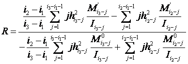
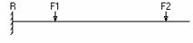
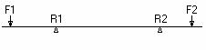
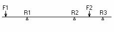

窗体完成对轴的力学计算与分析
本窗体的操作和使用步骤如下：
1． 本窗体打开的时候可以自动获取前面造型的信息并且加以显示，以方便此处的力学分析。
2． 打开窗体后我们可以查看前面造型的结构、载荷以及支撑信息，并且依据造型信息绘制轴的力学简图，如：
3． 力学计算
3.1静定轴
轴所受的支撑小于3时，轴是静定轴，只需要“计算支反力”，并且点击“内力计算”打开内力计算窗口，计算支撑和受力处的弯扭矩。
3.2超静定轴
轴受3个支撑作用时，是超静定的轴，根据支撑处的变形协调条件，用多余约束R来代替多余支撑，本计算中作者把第二个支撑R2当作多余支撑处理。R的有限差分计算公式如下

有限差分法把轴分成差分间距h或等或不等的许多段截面。
i1、i2、i3――分别为支承R1、R2、R3在所有差分截面中的位置；
i3-1-i1――支承R1与R3之间所分的差分截面数；
i2-1-i1――支承R1与R2之间所分的差分截面数；
hi――第i截面与第i-1截面的差分间距；
Mi’――已知外力在截面i处产生的弯矩；
Mi0――静定系上沿多余支承（此处为R2）方向作用单位力在截面i处产生的弯矩。
为了使用有限差分法，因而必须先“计算已知外力产生的弯矩”和“单位力在多余支撑处作用产生的弯矩”，这样计算处多余支反力后，再计算剩余的支反力。之后，点击“内力计算”打开内力计算窗口，计算支撑和受力处的弯扭矩。
4． 支反力和内力计算完毕，点“确定”，结束力学分析与计算，回到轴的主设计界面“绘制内力图”。
注：支反力和内力计算公式见附1、附2。
附1、支反力计算
支反力计算的原则：受力平衡。公式如下：
――梁所受的所有力（包括支反力）
――梁受的所有弯矩（包括支反力引起的）
由以上受力平衡公式推导出轴上支撑的计算公式如下：
1． 悬臂梁

（R――支反力，Fi――受载，x――坐标，Mi――所受弯矩）
2．两个支撑的轴

（Ri――第i个支撑的支反力，Fi――受载，x――坐标，Mi――所受弯矩）
3．三个支撑的轴

三个支撑的轴是超静定的轴，根据支撑处的变形协调条件，用多余约束R来代替多余支撑。有限差分法求第多余支撑受力的计算公式如下：
有限差分法把轴分成差分间距或等或不等的许多段截面。
n+1――支撑R1与R3之间所分的差分截面数；
k-1――支撑R1与R2之间所分的差分截面数；
hi――第i截面与第i-1截面的差分间距；
Mi’――已知外力在截面i处产生的弯矩；
Mi0――静定系上沿多余支撑（此处为R2）方向作用单位力在截面i处产生的弯矩。
在计算处第三个支撑受力的基础上，根据梁受力平衡方程
求解另外两个支撑的受力。
附2、内力计算公式
依剪力、弯矩计算公式计算出轴支撑、受载处的弯扭矩大小。剪力、弯矩方程如下：
――剪力方程
――弯矩方程
x――梁上横截面的位置
力学计算完毕回到轴的主设计窗体中点“画内力图”绘制轴的剪力、弯扭矩图。